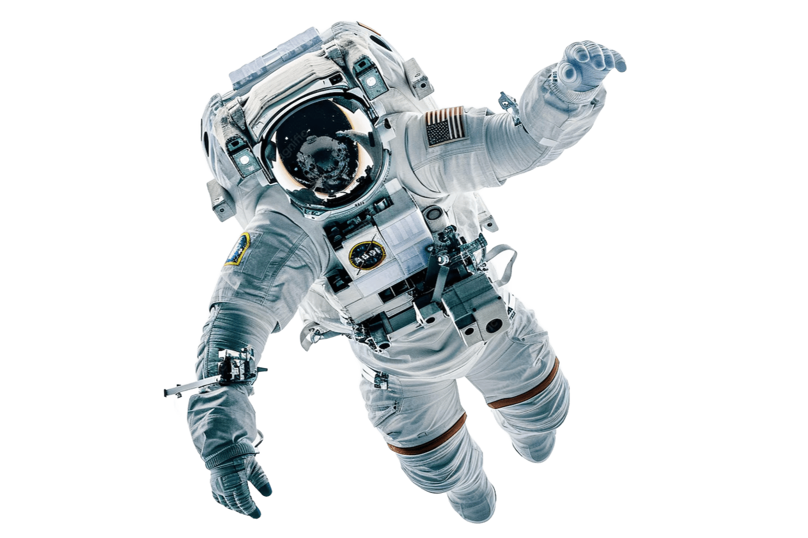
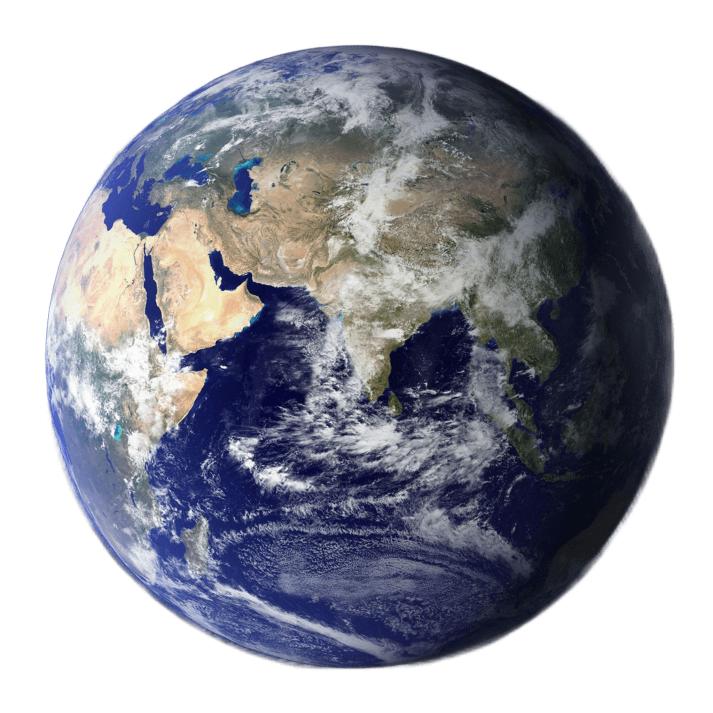
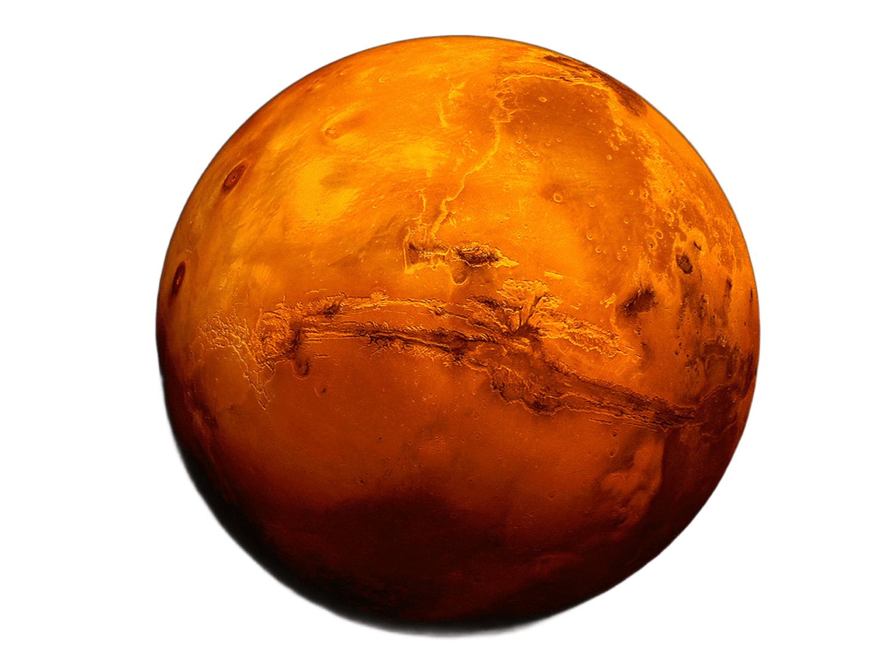
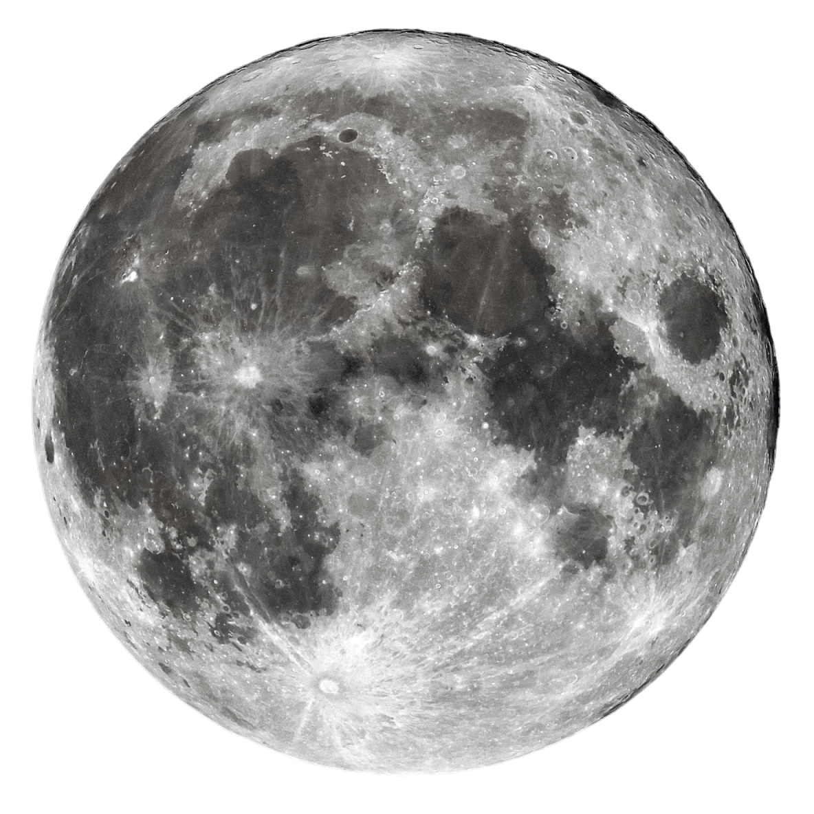
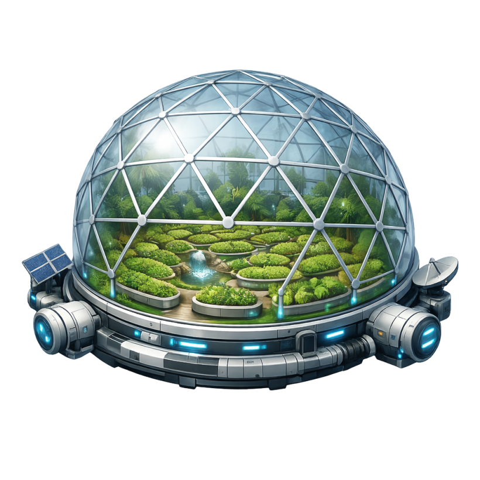
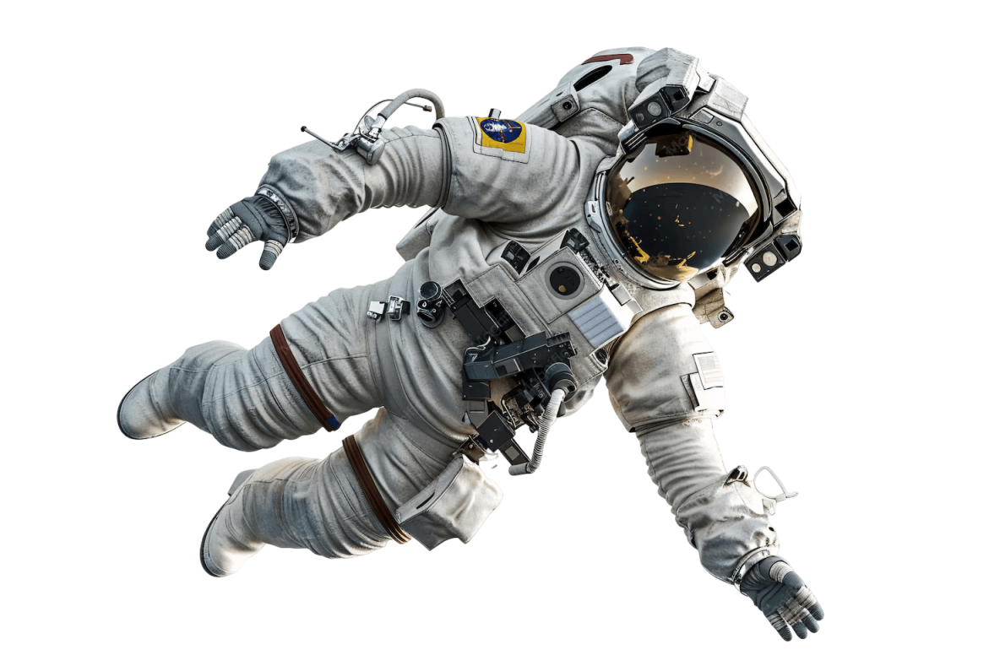

EXOBIOS




O Problema
A exploração espacial exige soluções capazes de garantir a produção de alimentos em ambientes hostis e distantes da Terra.
Dependência de suprimentos terrestres
Missões espaciais dependem do envio constante de alimentos da Terra, aumentando custos e riscos logísticos.
Ambientes extremos
Lua e Marte possuem temperaturas severas, radiação elevada e condições inadequadas para a agricultura convencional.
Controle de recursos
Água, iluminação e nutrientes precisam ser monitorados continuamente para evitar perdas de cultivo.
Produção sustentável
Futuras bases espaciais precisarão produzir parte dos próprios alimentos para garantir autonomia alimentar.
Colonização de longo prazo
Sem sistemas inteligentes de cultivo, a permanência humana prolongada em outros corpos celestes torna-se inviável.
Falta de monitoramento automatizado
O cultivo espacial exige decisões rápidas e precisas que não podem depender apenas da intervenção humana.
Tecnologia
O ExoBios utiliza sensores, automação e monitoramento inteligente para manter condições ideais de cultivo em ambientes espaciais.

Arduino e Automação
Controla automaticamente temperatura, umidade e iluminação da estufa.
Sensores Ambientais
Monitoram continuamente as condições necessárias para o cultivo.
Iluminação Inteligente
Aciona luzes artificiais quando a luminosidade estiver inadequada.
Irrigação Automática
Ativa a irrigação sempre que a umidade estiver abaixo do ideal.
Monitoramento
Exibe dados do ambiente para acompanhamento em tempo real.
Banco de Cultivos
Armazena parâmetros ideais para cada espécie cultivada.
Objetivos
Desenvolver uma estufa inteligente capaz de monitorar e controlar automaticamente as condições ideais para o cultivo de alimentos em ambientes espaciais.
Garantir o Cultivo
Criar condições ideais para o crescimento saudável das plantas.
Automatizar Processos
Reduzir a necessidade de intervenção humana constante.
Economizar Recursos
Utilizar água e energia de forma eficiente.
Monitorar Cultivos
Acompanhar continuamente as condições da estufa.
Apoiar Missões Espaciais
Contribuir para futuras missões de longa duração.
Produzir Alimentos
Garantir autonomia alimentar fora da Terra.
Público-Alvo
Pesquisa e Exploração
Destinado a pesquisadores, cientistas e engenheiros que desenvolvem tecnologias para a exploração espacial.
Auxilia estudos sobre produção sustentável de alimentos em ambientes extraterrestres.

Instituições e Agências
Pode ser utilizado por universidades, centros de pesquisa e agências espaciais interessadas em agricultura espacial.
Contribui para projetos voltados à permanência humana na Lua, Marte e futuras colônias espaciais.
Benefícios
O ExoBios oferece vantagens para a produção de alimentos em ambientes espaciais, aumentando a eficiência, segurança e sustentabilidade das missões.
Produção de Alimentos
Possibilita o cultivo contínuo de alimentos frescos em ambientes extraterrestres.
Automação Inteligente
Reduz a necessidade de monitoramento humano constante.
Economia de Recursos
Controla água e energia de forma eficiente, evitando desperdícios.
Monitoramento Contínuo
Detecta rapidamente alterações que possam prejudicar o cultivo.
Suporte às Missões
Auxilia futuras bases espaciais e missões de longa duração.
Impacto na Terra
Tecnologias aplicáveis à agricultura sustentável em nosso planeta.
Dia a Dia
O ExoBios conecta tecnologias utilizadas na Terra às futuras missões espaciais, promovendo agricultura inteligente e sustentável.
Na Terra
- Estufas inteligentes
- Economia de água
- Monitoramento remoto
- Agricultura sustentável
EXOBIOS
Monitoramento Inteligente
Em Marte
- Bases espaciais
- Produção de alimentos
- Automação agrícola
- Suporte às missões